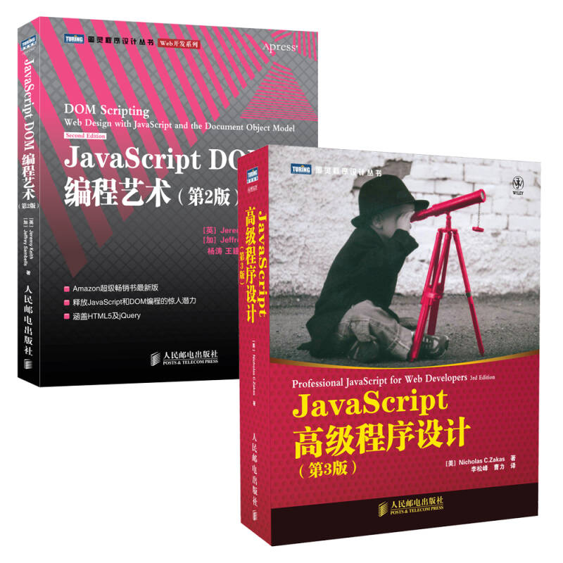
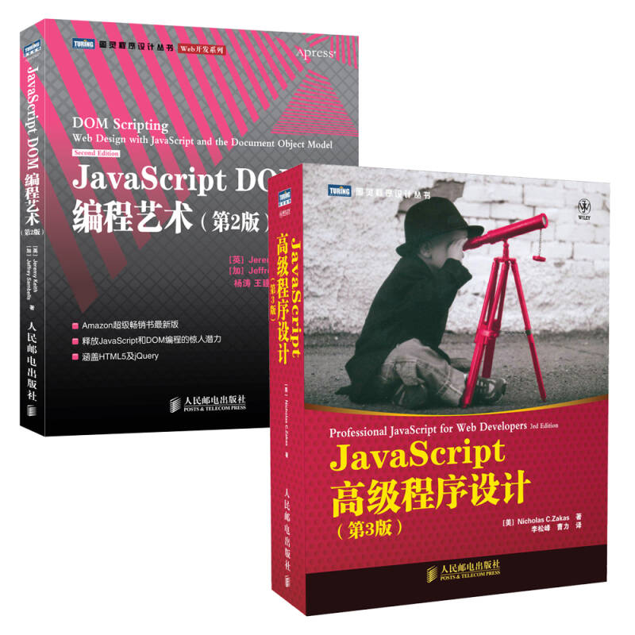

JavaScript基础
一、 js代码的应用
1. 使用
<script>
标签将js代码应用到HTML文档中
1) 作用：将JS代码应用到HTML文档中，该标签的位置是任意，通常放在被修饰内容下面或者head标签中
2) 属性及属性值：type=”text/javascript”，该属性的作用是告诉浏览器下面是一段js代码，浏览器需要按照js语法的规则进行解析
2. 将JS代码写在独立的js文件中，然后使用script标签的src属性将HTML文档和js文件关联起来
二、 JS代码应用的常见问题
1.
<script>
标签不可以写成单标签
2. 如果使用的是外部的JS文件，那么在script标签里面不可以再嵌入js代码，否则被嵌入的js代码无法执行
三、 JS信息的输出
1. alert()方法：以提示框的形式输出信息，格式alert(“要输出的信息”);
2. console.log()方法：在控制台输出信息，格式console.log(“要输出的信息”);
3. document.write()方法：将内容直接写在HTML页面中，格式document.write(“要输出的信息”);
四、 JS信息输出方式的区别
1. alert和console.log不能解析标签，但是document.write可以解析标签，alert和console.log会将标签原样输出
2. alert和console.log支持\n（转义字符，作用换行），但是documen.write不支持
五、 JS代码的注释
1. 单行注释：只能注释单行文本（不能换行），格式://注释内容
2. 多行注释：可以注释多行内容（可以换行），格式：/*注释内容*/
六、 JS代码注释的注意事项：注释不可以嵌套
七、 JS小程序简介
1. 分号：JS中语句结束的标识，可以省略，如果省略JS认为换行后语句结束，但是建议自己加上分号
2. 常量：所谓常量就是程序运行过程中其值不可以改变的量，有整数、负数、小数、字符串3 1 3.1 -3 “abc”
3. 变量：所谓变量就是程序运行过程中其值可以改变的量，其实变量就是用来存储数据的存储空间，注意一个变量只能存储一个数值
4. 变量的定义格式：var 变量名;
5. 变量的初始化格式：var 变量名=值；
6. 变量定义的注意事项：
1) 如果要定义多个变量，那么可以用将多个变量写在一行，用逗号进行分隔，如var num1, num2,num3;
2) 变量名字的命名规则（标识符的命名规则）
l 由字母、数字、下划线、$符号构成
l 不可以以数字开头，不建议以下划线开头
l 严格区分大小写
l 见名知意
l 采用驼峰式命名法命名，所谓驼峰式命名法是指当名称中有多个单词时，从第二个单词开始，每个单词的首字母大写var myDiv
l 不可以示关键字和保留字
7. 数据类型：数值型、字符串型、布尔型、Undefined、Null
1) 数值型：就是数字，包含正数、负数、整数、小数、0、NaN、Infinity、-Infinity
l Infinity：正无穷
l -Infinity：负无穷
l NaN：not a number的缩写，表示该值不是一个数值
2) 字符串型：用双引号或单引号包起来的0个或多个字符，如果双引号中什么也没有，那么这个字符串被称为空字符串
3) 布尔型：包含true和false两个值
l true：表示真（成立）
l false：表示假（不成立）
4) Undefined：表示变量未定义，或变量被定义出来，但是没有被赋值
5) Null：表示一个变量没有没有指向任何一片存储空间，即变量存在，但是里面是空的，类似于Undefined，通常用于存储对象，但是还没有指向该对象之前
八、 typeof运算符：该运算符的功能是用来判断一个变量的数据类型，格式typeof 变量/数据/（表达式）
1) 数值型数据：返回值为number
2) 字符串型数据：返回值为string
3) 布尔型数据：返回值为boolean
4) Undefined：返回值为undefined
5) Null：返回值为null
九、 数据类型转换
1. 自动数据类型转换：数据在运算过程中自动转换
1) 在使用加法运算符时，如果操作数中有一个或两个是字符串型数据，那么最终结果为字符串型数据
2) 在使用运算符运算时，如果操作数中有布尔类型和数值型数据，那么布尔类型自动转换成数值型数据
l true-----1
l false-----0
2. 强制数据类型转换：认为将数据类型进行转换
1) 其它类型转换成数值型数据（字符串转换成数值）
l parseInt：将字符串转换成整数，转换规则如下
Ø 忽略字符串中的前后空格
Ø 能够正确识别正负号，即保留正负号
Ø 在转换时，遇到非数值型的字符停止转换，如果该字符串的第一个字符是非数值型的，那么转换的结果为NaN
l parseFloat：将字符串转换成小数（识别小数点，其它规则同上）
l Number：将其它类型的数据转换成数值型，注意被转换的数据必须是纯数值构成，否则无法转换，其它的规则同上
2) 其它类型转换成布尔型数据，用到的方法是Boolean（）方法，格式Boolean(要转换的数据)
l 数值型数据中的0转换成FALSE
l 数值型数据中的NaN转换成FALSE
l 字符串型数据中的空字符串转换成FALSE
l Undefined数据转换成FALSE
l null转换成FALSE
3) 其它类型的数据转换成字符串数据
l 使用toString（）方法，格式：要转换的数据.toString();
l 利用+号来实现转换
十、 prompt()方法的使用
1. 作用：通过键盘向程序赋值
2. 格式：prompt(“提示文字”);
3. 注意：prompt方法接收到的值为字符串类型
参考用书:
 

内容来自:https://blog.csdn.net/smileboyjian/article/details/72572008

 13112364567
13112364567